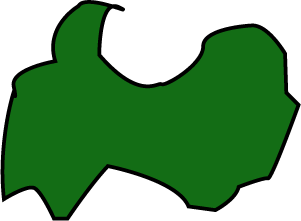
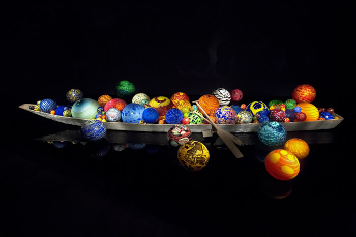
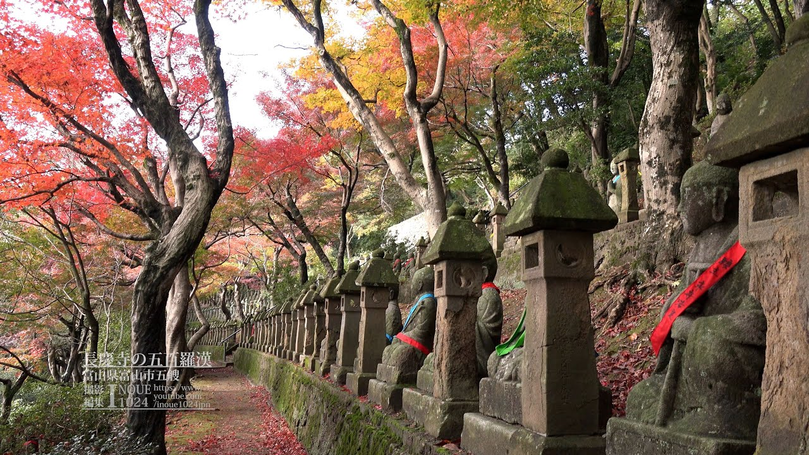

“Toyama” means “rich with mountains”, and the name doesn’t disappoint! The city offers stunning views of a series of 3,000 meter peaks belonging to the Northern Japan Alps. Located on the picturesque Japan Sea, only 250km northwest of Tokyo (just over two hours by Shinkansen), you will be amazed by the perfect scenery and dynamic landscape. Historically, Toyama was a powerful castle town and today this thriving high tech city still offers visitors splendid ancient festivals and neighborhoods with traditional 19th century wooden buildings, together with ultra-modern trams that crisscross beautiful downtown rivers and canals, and the largest community of glass artists in Japan. With some of the most famous sashimi and sushi in Japan, award winning pure water, spectacular mountain trekking, remarkable museums, and easy access, eco-friendly Toyama really has it all! Come and experience the real Japan! (Source: Toyama Official Tourism Site)
Prefecture Image
Toyama Glass Museum
Samurai Experience in Toyama
Buddhist Arhats
